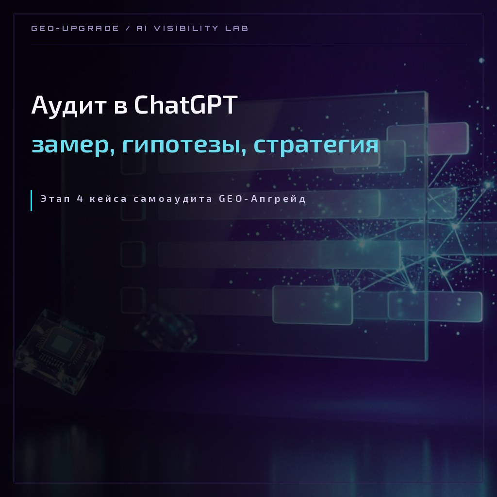

CASE LAB · САМОАУДИТ · ЭТАП 4
Аудит в ChatGPT: этап 4 кейса самоаудита
По тем же 66 запросам, что и в замере Алисы AI, прогнали ChatGPT: 67 прогонов, 19 метрик, разбор источников и конкурентов. Стратегия по ChatGPT — своя, не копия Алиса-версии: у этой системы другие кормящие источники и другой принцип сбора ответов. Perplexity-замер — впереди.

Case type: Lab Protocol
| Экспонат | EXH-02 · кейс о нас самих: GEO-Апгрейд как собственный клиент |
|---|---|
| Замер | прогон 25.10.2026 16:40 — 26.10.2026 01:36 (НСК) · ChatGPT (chatgpt.com, web search включён) |
| Объём | 66 запросов + 1 повтор = 67 прогонов · 9 категорий · 4 сегмента · 6 аватаров |
| Инструмент | рабочая книга «selfaudit-chatgpt-2026-10-16-final» · метрики по эталону Замер-01 (СВОДНАЯ v2) |
| Верификация | независимый пересчёт всех 19 метрик + аудит формул и конвенций разметки |
| Результат | полная карта видимости в ChatGPT: источники, конкуренты, гипотезы и своя стратегия в три волны |
| Статус | этапы 1–3 из 5 готовы · этап 4: ChatGPT готов, впереди Perplexity · этап 5 — контрольный замер и динамика метрик |
1. Два механизма ChatGPT
ChatGPT отвечает двумя способами. «С поиском» (59 из 67 ответов) — модель показывает список источников, и тогда наша витрина в игре: бренд назван в 36 из 66 ответов (Mention Rate 0.545). «Из головы» (8 ответов) — источников нет, и нас в них тоже: в «безымянных» категориях — информационные 0.167 и альтернативы 0.167 — плато с сентября.
Отсюда главный вывод замера: GEO-стратегия — это работа не с моделью напрямую, а с тем, что модель может найти и уже знает. Кросспосты дают «кто», сайт даёт «что»: все три ответа, где нас назвали без нашего сайта в источниках, опирались на агрегаторы и каталоги.
Что это даёт клиенту: тот же протокол потом работает на его бренд. Двухконтурность — не абстракция, а карта площадок: вкладываться нужно и в веб-витрины (Workspace, Sostav, vc.ru, TenChat, справочники), и в геосервисы (карты, каталоги) — у каждой системы свой приоритет.
2. Как шёл замер и верификация
Прогон шёл 25 октября 16:40 — 26 октября 01:36 (НСК). Протокол:
| Поле | Правило |
|---|---|
| Модель | ChatGPT (chatgpt.com, web search включён). Точная версия модели при прогоне не фиксировалась — ограничение метода, учесть при сравнениях |
| Браузер | отдельное окно, инкогнито, новый аккаунт, память выключена |
| Свежий чат | один запрос = один новый чат, без уточнений в том же чате |
| Поиск | web search включён, переключатель проверен перед первым прогоном и не менялся до конца замера |
| Повтор | №20 повторно в свежем чате; в метрики не входит — только Consistency |
| Ответы и источники | не редактируются — только разметка |
Разметка каждого ответа — по единой схеме, той же, что в замере Алисы: бренд, позиция, точность фактов, тональность, ссылка, конкуренты. Правила пересчёта — по эталону Замер-01 (СВОДНАЯ v2).
Верификация: независимый пересчёт всех 19 метрик совпал с кэшем формул. Попутно найдены и исправлены несколько правок разметки (позиция №38 — от неё Presence стал 33/36 = 0.917; повтор сверен с запросом №20, а не с №1; дата и ссылка в проверках). По конвенции источников дозаполнены 9 строк: «нет списка источников = нас в источниках нет; прямая ссылка в ответе — отдельный признак, он не значит, что сайт назван в источниках».
Редкая находка — «ссылка без имени» (№62): ссылка на наш сайт в ответе есть, имени бренда в тексте нет. Если это механика ChatGPT (клик-элемент без текста), конвенция требует уточнения на следующем замере; если неточность разметки — править таблицу.
3. Метрики ChatGPT-замера
Сводка после верификации — по правилам СВОДНАЯ v2:
Полная сводка — все 19 метрик:
| Метрика | Значение | Что значит |
|---|---|---|
| Mention Rate | 0,545 | бренд в 36 из 66 ответов |
| Position Score | 1,22 | когда нас зовут — почти всегда первыми |
| Presence Score (топ-2) | 0,917 | в 33 из 36 брендовых ответов мы в топ-2; проблема не позиция, а частота |
| Accuracy | 0,944 | 34 из 36 упоминаний фактически верные |
| Citation Rate | 0,833 | 30 из 36 упоминаний со ссылкой на нас в ответе |
| Website Mention Rate | 0,806 | сайт назван в 29 из 36 брендовых ответов |
| Website Link Rate | 1,00 | наш сайт в источниках всех 36 брендовых ответов; нюанс формулы — раздел 10 |
| Website Citation Gap | 0,028 | единственный случай «сайт назван, но без источников» — №23 |
| Ghost Gap | 0,056 | из 36 ответов с нашим сайтом в источниках лишь 2 «призрака» |
| Share of Voice | 0,271 | наш вес в разговоре — 27% (36 голосов из 133) |
| Brand Gap | −61 | конкуренты упомянуты на 61 голос больше |
| Sentiment | 0,556 | 20 позитивных, 16 нейтральных, 0 негативных |
| Consistency | 1,0 | повтор №20 дал согласованный результат |
| Competitive Coverage | 0,470 | конкуренты в 31 из 66 ответов — поле плотнее сентябрьского |
| Avg Competitors | 1,47 | в среднем полтора конкурента на ответ |
| Category Coverage | 0,773 | бренд или конкурент в 51 из 66 ответов |
| Solo Mention Rate | 0,303 | бренд без конкурентов — 20 из 66 ответов |
| Competitive Context | 0,444 | с брендом и конкурентами — 16 из 36 брендовых ответов |
| Coverage-SoV | 0,556 | соло среди брендовых упоминаний (20 из 36) |
| AI Visibility (индекс) | 0,623 | интегральная: 0,35·MR + 0,2·SoV + 0,15·(1/Position) + 0,1·Accuracy + 0,1·Citation + 0,05·Sentiment + 0,05·Consistency |
Раскладка по категориям (66 запросов, без повтора):
| Категория | N | MR | SoV | Что видно |
|---|---|---|---|---|
| Навигационный | 6 | 1,000 | 1,000 | по имени находимся всегда |
| Отзывы | 6 | 1,000 | 1,000 | 6/6, но «отзывов нет»: пустая репутация |
| Сравнение | 6 | 1,000 | 0,545 | методика и цены стали отвечать — 6/6 против чужих |
| Кейсы | 12 | 0,583 | 0,333 | рост за счёт Workspace-кейсов и Топ-160 |
| Локальный | 6 | 0,500 | 0,176 | рост карточек, но НСК-кластер — ноль |
| Рейтинг | 6 | 0,500 | 0,086 | свои списки работают, чужие — нет |
| Коммерческий | 6 | 0,333 | 0,105 | списки-подборки закрыты чужими ценами в каталогах |
| Информационный | 12 | 0,167 | 0,333 | «из головы»: контент-объяснения модель не забирает |
| Альтернативы | 6 | 0,167 | 0,083 | полная стагнация с сентября: «дайте дешевле/проще» — 1/6 два замера подряд |
| ИТОГО | 66 | 0,545 | 0,271 | Presence 0,917 · Ghost Gap 0,056 |
Читается картинка так: мы стали видны почти всегда (Presence 0,917) и почти без ошибок (Accuracy 0,944), слепые зоны закрылись (Ghost Gap 0,056). Одновременно выросло поле конкурентов (Brand Gap −61) — ниша заметнее всех, и каждое «справедливое» улучшение покупается борьбой за долю голосов. Позиция удержана — значит рост частоты не разбавил качество.
4. Источники и кормящие
ChatGPT за 67 ответов процитировал 339 уникальных доменов — рынок источников GEO-темы раздроблен, ни один внешний игрок не держит «контур». Домены раскладываются на пять функциональных слоёв:
| Слой | Кто | Роль в ответах |
|---|---|---|
| Наш сайт | geo-upgrade.ru — 192 цитирования в 34 ответах | главный источник фактуры: цены, услуги, кейсы, контакты |
| Медиа и кросспосты | workspace.ru, sostav.ru, vc.ru, tenchat.ru | «лицо» бренда и статусная экспертиза; дают имя там, где сайт не цитируется |
| Каталоги и рейтинги | ruward.ru, 1rating-geo.ru, digital-radar.ru, ratingruneta.ru | собирают списки агентств — отсюда попадания и промахи в рейтингах |
| Локальные карточки | spravka.city, Яндекс Услуги, 2ГИС, profi.ru, promindex.ru | мост в локальные и коммерческие запросы |
| Авторитеты и документация | OpenAI, Google, Яндекс, КонсультантПлюс, Gartner, Forrester | легитимация темы; забирают информационные ответы целиком |
| Конкуренты и GEO-блогы | ~90 агентских доменов и чужих GEO-блогов | голоса конкурентов в списках; контент-экосистема GEO-темы |
Наш сайт цитируется в 34 из 59 ответов с источниками (58%) — первое место среди всех доменов с отрывом почти вчетверо от ближайшего внешнего. Но картина неравномерная: цитируются служебные страницы — about, cases, index, services, FAQ, contacts, reviews, Топ-160, — а статьи блога не цитируются ни разу (36 материалов — ноль цитирований, кроме одной). ChatGPT читает наш сайт как «паспорт сущности» (кто мы, цены, кейсы, отзывы), а не как журнал. Отсюда следствие для контента: статьи надо пересобирать под «вырываемость» — короткие определения в первом абзаце, таблицы, FAQ-блоки.
Парадокс отзывной страницы: reviews.html цитируется в 12 ответах при нуле отзывов — она работает как источник факта пустоты. Кормит честность, но не доверие. Ответ не «убрать страницу», а заполнить её: первый реальный отзыв мгновенно меняет содержание всех шести отзывных ответов.
Имя живёт вне сайта: кейс Топ-160 и публикации на Workspace дали нас первыми в ответе, где наш сайт в источниках вообще не участвовал. В каталогах и рейтингах всё строже: RUWARD — самый цитируемый внешний источник (38 цитирований в 26 ответах, наш профиль там — источник цен и паспорт компании), независимый рейтинг GEO-агентств с открытым приёмом заявок цитируется в рейтинговых и кейсовых ответах — а нас в нём нет. Spravka.City — главный локальный мост (17 цитирований в 13 ответах: адрес, цены, «отзывов нет»); Яндекс Услуги, 2ГИС, profi.ru и каталоги цен дополняют локальный слой. Информационные ответы закрывают первоисточники (OpenAI, Google, Яндекс, КонсультантПлюс, Gartner, Forrester) и чужие GEO-блоги — наши статьи в этот контур не попадают ни разу. Барьер входа в источники ChatGPT ниже, чем в топ Google: свежие, точно сформулированные страницы занимают контуры, если сильные игроки их не заняли.
«Не названы» не значит «не опирался»: один ответ («источники не указаны») дословно цитирует наш FAQ — модель опиралась на нас, но не показала список. Метрика «сайт в источниках» недооценивает фактическую опору; при разборе смотреть текст ответа, а не только колонку источников.
5. Конкуренты: кто съедает голоса
В замере конкуренты получили 97 голосов против наших 36 — Brand Gap −61. Но «конкуренты» — не однородная масса. По разбору это три типа игроков с разными источниками силы:
| Тип | За счёт чего модель их видит |
|---|---|
| Локальные агентства с публичными ценами | оформленные карточки и каталоги с конкретными цифрами: цены в карточках, GEO-страницы с тарифами, отзывные профили — списки-подборки собираются из них, а не из нас |
| Игроки второго города | GEO-страницы, карточки и публикации в Новосибирске — единственный конкурент, который светится сразу в обоих наших городах, плюс НСК-лидеры в локальной выдаче |
| Федеральные GEO-команды | рейтинги, сообщества и громкие клиентские кейсы с цифрами («видимость выросла в N раз») — они формируют фон рынка и язык категории |
Списки, где нас нет, — первая территория конкурентов: там первые места занимают те, кто собрал «списковую инфраструктуру». Но сравнения и локальные «рядом»-запросы — наша сильная зона: в сравнениях счёт 6/6 в нашу пользу, а на карточный запрос «специалист рядом» модель ставит нас первыми.
Главный вывод: Brand Gap −61 создаёт не «сильный соперник», а списковая инфраструктура конкурентов. Мы сильнее всех в «измерениях», но отсутствуем в «списках» — и это лечится переносом измерений в списковые форматы: свой обзор-рейтинг, заявки в рейтинги, карточки, кейсы с цифрами.
6. Локальный контур: карты и каталоги
Главная находка раздела — два контура карточек. ChatGPT ни разу не цитировал Zoon, зато опирается на Spravka.City (наш главный мост в этом прогоне: 17 цитирований в 13 ответах), Яндекс Услуги, Google Maps и каталоги цен с нашими страницами услуг. В сентябрьском исследовании по Топ-160 главными были 2ГИС, Zoon и Яндекс Карты, а ВК — сильный кормилец. Гипотеза: у ChatGPT контур строится на «веб-справочниках», а у Алисы — на геосервисах.
| Площадка | ChatGPT 26.10 | Алиса (Топ-160, сентябрь) |
|---|---|---|
| Spravka.City | 17 цитирований в 13 ответах — главный мост | не в топе |
| Яндекс Услуги | 14 в 6 ответах | 28/79 |
| 2ГИС | 6 в 5 ответах (карточки сфер, в т.ч. конкурентов) | 70/79 — кормилец №1 |
| Zoon | 0 цитирований | 67/79 |
| Яндекс Карты | не в топе | 66/79 |
| ВКонтакте | не цитировался | 38/79 |
Что карточный контур уже дал в ChatGPT: первые места по запросам «GEO-маркетолог рядом» и «специалист по AI-видимости», точные цены и «лучшее совпадение» по разовому аудиту с передачей методики — всё найдено через локальные справочники. Что не дало: на запрос «GEO-маркетолог для малого бизнеса» модель искала по картам и нашла карточки конкурентов с услугой «геомаркетинг» — нашей карточки в этой выдаче нет, хотя карточки 2ГИС и Яндекс Карт у нас есть: дело не в отсутствии, а в языке описания.
Главные дыры для ChatGPT-контура: привязка Яндекс Услуг к НСК-гео и НСК-категориям (на НСК-запросе модели нас не нашла), рубрика Zoon Томск («студии копирайтинга» — не та ниша), Bing Places (база ChatGPT) — на модерации, отзывы — 0 везде.
Язык бренда и язык клиента: фирменные термины (лаборатория, GEO-сканер, AI-видимость) не менять — модель их воспроизводит. Но карточки должны содержать и язык клиента: «продвижение в нейросетях», «агентство продвижения в нейросетях», «специалист по продвижению в нейросетях», «GEO-эксперт». Сущности не смешивать: «геомаркетинг» остаётся про карты, GEO — про нейросети; на сайте это два разных блока работы, а не синонимы. NAP единообразно: Томск +7 952 944-92-39, НСК +7 952 157-29-55, название везде без склонений. Контроль после правок — повтор четырёх контрольных запросов.
7. Гипотезы замера
Все гипотезы замера сведены в три группы. Проверка — контрольный замер (этап 5) по контрольным запросам.
Механика ответов
| Гипотеза | Суть |
|---|---|
| Имя-триггер | имя бренда в запросе — почти гарантированное попадание (18 из 18 в именных категориях); резерв видимости — в «безымянных» запросах |
| Карта-мост | списки собираются из карточек: где наша карточка в выдаче — мы первые; где нет — промах. Полнота карточек = билет в списки |
| Методика — щит | в спорах о прозрачности нас защищают публичные протоколы и метрики — цитируемая документация модель умеет считывать |
| Цена — враг | в ответах «дешевле/проще» побеждают цены конкурентов; наши цены всплывают только при прямом вопросе — нужны ценовые якоря в цитируемых источниках |
| Пустая репутация консервирует осторожность | нулевые отзывные витрины дают вердикт «проверить перед оплатой»; первый настоящий публичный отзыв — самые дешёвые проценты замера |
| Измерение ≠ результат | модель ждёт клиентских кейсов с цифрами «было → стало»; один такой кейс укрепит кейсы, отзывы и сравнения одновременно |
| НСК — зона слепоты | в Новосибирске нас нет в рейтинговых и локальных списках — нужен НСК-след: карточки, каталоги, публикации |
| Ссылка без имени существует | редкий случай «слепой ссылки» (№62) — конвенция разметки требует уточнения на следующем замере |
Источники и кормящие
| Гипотеза | Суть |
|---|---|
| Служебные страницы кормят, блог — нет | цитируются 11 служебных страниц, статьи блога — ноль; пересборка статей под «вырываемость» важнее новых статей, пока не прояснится механика |
| reviews.html — страница-парадокс | 12 цитирований при нуле отзывов: страница — источник факта пустоты; заполнить, а не убирать |
| «Не названы» ≠ «не опирался» | ответы без списка источников могут дословно цитировать наш FAQ — метрика «сайт в источниках» недооценивает опору |
| Независимый слой — незанятое место | модель цитирует открытые рейтинги, где нас нет; заявка в рейтинг с приёмом заявок — самый дешёвый шаг к независимому подтверждению |
| Федеральные цены — фон, а не враг | на фоне федеральных прайсов наш выглядит доступным; но в ценовых подборках нас нет — занести цены в каталоги |
| Разрыв «геомаркетинг» | конкурентов в №11 называют карточками с услугой «геомаркетинг»; решение — не смешивать сущности, а показать на сайте два разных блока работы и завести отдельную страницу «геомаркетинг» |
| Сущность-паразит | чужой источник стабильно цитируется в брендовых ответах — кейсы сущности слиплись; нужна явная атрибуция «наши кейсы» в наших материалах |
| Словарь — почти незанятая территория | метод-запросы отвечаются чужими блогами; короткие словарные определения с нашими терминами — кандидат в общее знание |
| Топ-160 — двойной источник | наше исследование кормит и нас, и список конкурентов; рядом с данными нужен явный блок «кто мы и как нас найти» |
Локальный (карточный) контур
| Гипотеза | Суть |
|---|---|
| Два контура | ChatGPT и Алиса питаются разными картами (веб-справочники vs геосервисы); ключевые фразы проверять в обоих контурах отдельно |
| Карточка без имени-сигнала не работает | модель включает карточку в список, только если её описание совпадает со словами запроса — нужно языковое покрытие карточек |
| Эффект «страница услуги с ценой» | отдельные страницы услуг в каталоге дали модели точный прайс — самый цитируемый формат каталога, дублировать в других каталогах |
| Отзывная пустота консолидирована | все карточки пустые одновременно — один-два реальных отзыва в каждой снимают класс оговорок во всех отзывных ответах сразу |
8. Стратегия по ChatGPT
Это вторая стратегия кейса, не копия первой. По итогам аудита в Алисе AI уже собрана своя стратегия — и месяц работ показал, что она сработала: Presence 0,403→0,917, Ghost Gap 0,345→0,056, Accuracy 0,724→0,944, MR 0,433→0,545 (первый честный снимок после месяца внедрений — этот самый замер). Но у ChatGPT другие кормящие источники и другой принцип сбора ответов, поэтому стратегия по нему — своя. Сравнение систем — не метод-матч, а категорийный срез.
Пять принципов
- П1. Конвертировать измерения в списки. Наши замеры выигрывают споры с моделью, но модель их не находит: они живут на сайте, а не в списках и рейтингах, откуда собираются ответы.
- П2. Депозит в двух контурах. ChatGPT — веб-витрины и справочники; Алиса — геосервисы и ВК. Обе — 2ГИС. Приоритеты известны и зафиксированы.
- П3. Язык бренда + язык клиента, сущности раздельно. Фирменные термины не менять; клиентский язык добавлять отдельными формулировками; «геомаркетинг» и GEO не смешивать.
- П4. Честность как щит и как стандарт. Наш голос совпадает с форматом ChatGPT-ответов; собственный рейтинг делается с публичной методологией — так оговорка «рейтинг подготовлен самим участником» превращается из слабости в стандарт рынка.
- П5. НСК — новый фронт. Карточная база Новосибирска создана за октябрь, но в замере ноль светимости — светимость приходит с задержкой. Довести НСК-слой до первого полного прогона.
Десять направлений
| № | Направление | Суть |
|---|---|---|
| 1 | Списковая территория: рейтинги и обзоры | А свой обзор-рейтинг «GEO-агентства Томска и Новосибирска» с публичной методологией; заявки в открытые рейтинги. В сообщество GEO, связь с автором томского обзора, отраслевая номинация. С серийные статьи-«полки» по нишам |
| 2 | Контентный план: статьи (с пометками Дарьи) | А юристы, психологи/эксперты, салоны, типографии НСК, B2B. В «GEO без абонемента», «не навязчиво ли», «как проверить», «методика 19 метрик». С НСК-гид, томский B2B, обучение, усиление оффера Штурвала. Все — Lab Protocol, обложка по канону, кросспост с уникальной версией, вырываемые блоки |
| 3 | Прайс, сканер и описания услуг | А конкретные цены вместо вилок; описания услуг с методикой, метриками и перечнем AI-систем; актуализация профиля в каталоге агентств. В расширение сканера (больше запросов и конкурентов) |
| 4 | Карточный контур | А привязать Яндекс Услуги к НСК, сменить рубрику Zoon Томск. В НСК-объявления с конкретными ценами (после 28.10), Bing Places, первая волна отзывов, контрольные запросы после заливок. С Flamp — не тратить ресурсы |
| 5 | Репутация, кейсы и сущности | А клиентский кейс с цифрами «до/после»; развести сущности с чужим источником-паразитом. В возраст домена — честно; «штат 1 человек» в каталоге → «лабораторный формат»; блок «что применили после замера и как изменилась видимость» |
| 6 | Термины, атрибуция, формулировки | В бренд и автор в первых предложениях определений словаря; формулировка «GEO-эксперт» в карточки и профиль. С подписи наших инструментов брендом |
| 7 | Технические правки сайта | А мета-теги cases.html с ключами списковой волны; проверка склонений. В FAQ, вырываемость статей. С страница «Информация для AI-ассистентов», разделение сущностей GEO/геомаркетинг на страницах услуг |
| 8 | Площадки: депозиты на месяц | Workspace (кейсы ботов + номинация), TenChat, Sostav, vc.ru; Дзен — завести канал (кормилка Алисы); ВК; РБК и вТомске.ру — заявки; Pressfeed — повторить в ноябре |
| 9 | НСК-трек (фокус с 28.10) | карточная база НСК готова; контент: статья «GEO для типографий», гид «GEO-продвижение в Новосибирске», НСК-страница услуг, объявления с ценами; собственный топ Томск + НСК |
| 10 | Методика замеров | фиксировать модель до первого запроса; повтор в каждом замере; учитывать нюанс WLR; контрольные запросы для прогресса; Perplexity-замер — третьим контуром |
Три волны исполнения
| Волна | Срок | Состав |
|---|---|---|
| Волна 1 — быстрые правки | до 31.10 | мета-теги cases.html; проверка склонений; конкретные цены; закрыть «досье готовится»; описания услуг с методикой и метриками; заявка в независимый рейтинг; НСК-объявления после 28.10; рубрика Zoon |
| Волна 2 — контент и списки | 1–14.11 | статьи приоритета А с обложками по канону и кросспостами; свой обзор-рейтинг; FAQ; Дзен-канал; сообщество GEO; актуализация каталога |
| Волна 3 — продукты и замер | после 14.11 | расширение сканера; обучение; отраслевая номинация; контрольный замер по контрольным запросам; Perplexity-замер |
Критерии успеха (контрольный замер)
| Метрика | Текущее | Цель к следующему прогону |
|---|---|---|
| MR | 0,545 | ≥ 0,60 |
| SoV | 0,271 | ≥ 0,30 (доля в выросшем поле) |
| Brand Gap | −61 | ≥ −50 (не догнать поля, но сузить) |
| НСК-кластер | 0 светимости | первые упоминания в НСК-ответах |
| Альтернативы | 0,167 плато | ≥ 0,33 (статьи-офферы + карточные «полки») |
| Отзывы | 0 везде | ≥ 1 на каждой главной карточке |
| Ghost Gap | 0,056 | 0,00–0,03 (удержать) |
| Точность | 0,944 | ≥ 0,944 (не просесть) |
9. Проверьте свой бренд: чек двух контуров
Мини-версия карточной стратегии на вашем бренде: восемь признаков, по которым нейросети собирают «списковую инфраструктуру». Отметьте, что у вас есть, — счёт покажет, в каком контуре вы живёте.
Отметьте пункты и нажмите кнопку.
Чек локальный: данные никуда не отправляются. Шкала ориентировочная — полная картина только из замера по протоколу.
10. Ограничения и честность
- Одна нейросеть (ChatGPT, chatgpt.com, web search включён) и одна точка времени: 25–26 октября 2026. Perplexity — отдельный замер; точная версия модели при прогоне не фиксировалась — ограничение метода.
- Цифры фиксируют состояние сайта и площадок на дату замера. С тех пор сайт обновляется — сравнивать с текущим состоянием корректно только в контрольном замере.
- 67 прогонов — не статистика: правило «3–5 повторов» на навигационные и брендовые запросы в этом замере ещё не отработано.
- Сравнение с Алисой — категорийный срез (где нас видят, где нет), не метод-матч: у систем разные источники и механика ответов.
- WLR = 1,0 по методике Замер-01 (числитель — все упоминания с сайтом в источниках); вариант «WLR при бренд=1» = 0,944 — учитывать при сравнениях.
- «Ссылка без имени» (№62) — конвенция разметки требует уточнения на следующем замере: механика ChatGPT или неточность разметки.
- Статусы правок и рекомендаций — по состоянию сайта и реестров на 26 октября 2026; точки роста перепроверяются при каждом касании.
11. Что дальше
- Perplexity-замер по тем же 66 запросам — впереди; эталонная таблица готова. После него — сводная стратегия трёх систем и пересборка приоритетов.
- Заливка правок волны 1 (до 31.10): мета-теги cases, склонения, конкретные цены, описания услуг, заявка в независимый рейтинг, НСК-объявления.
- Этап 5: контрольный замер в Алисе AI по тому же протоколу — диф к baseline 30.09.
- Динамика метрик «было → стало» — Mention Rate, Presence и Ghost Gap: итог кейса.
Хотите такой же аудит для своего бренда? Начните с бесплатного мини-аудита или обсудим перенос протокола на ваши запросы: свой список вопросов, свой baseline и план правок по слепым зонам.
СВЯЗАННЫЕ ТЕРМИНЫ